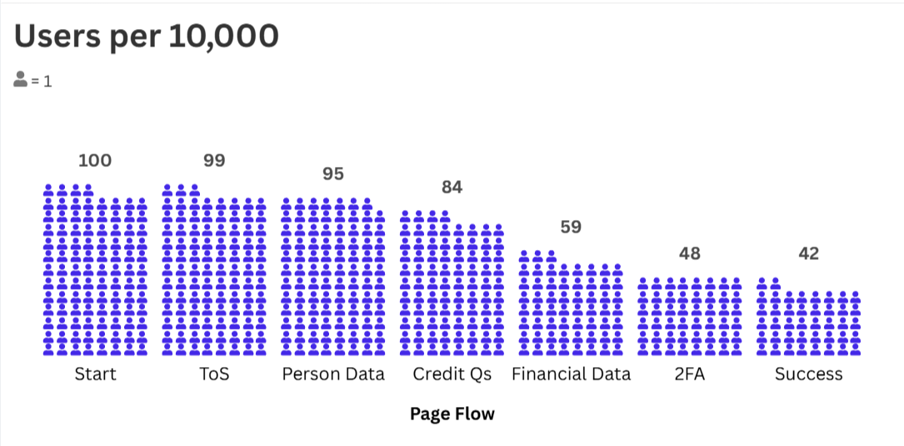
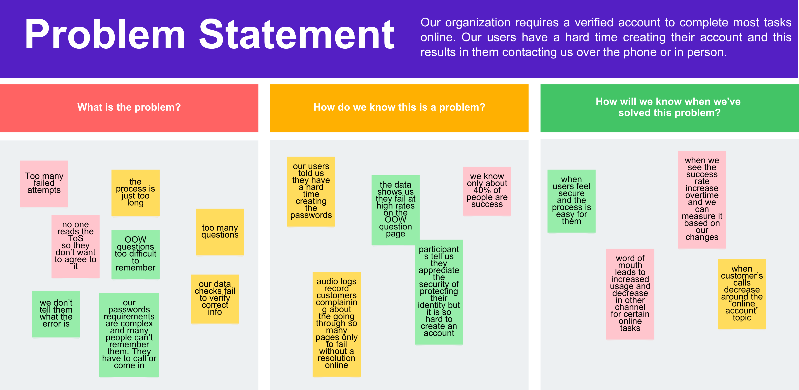
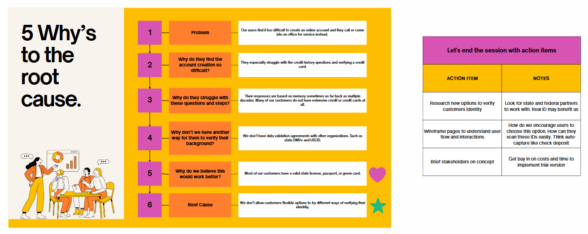
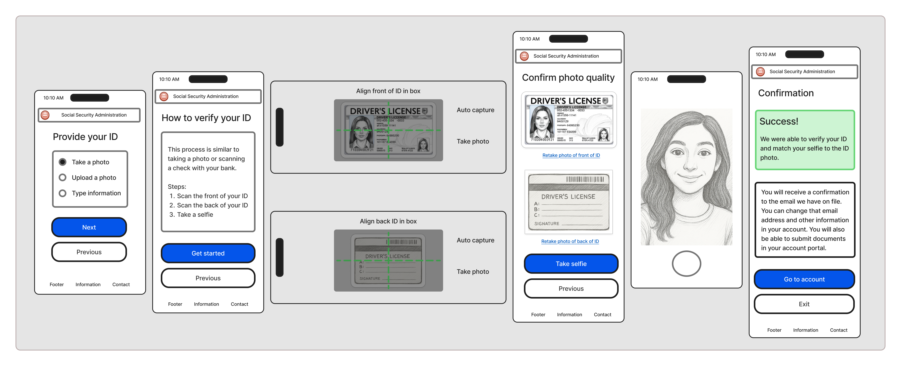
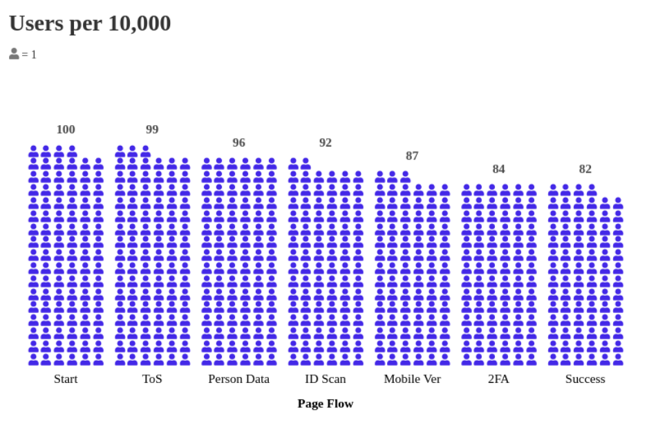

Digital Identity Enhancements
Project Summary
Our account creation problem was too difficult for people to complete. Our most complicated and time-consuming services require people to create an account. When they are unsuccessful, they call or walk into an office. This cost taxpayers money.
Results
We were eventually able to increase the success rate from around 40% to over 80%. This took many iterations and using Lean UX practices.
Process
For this project, we began by testing the product end-to-end. Once we identified key problem areas, we redesigned and tested again but this time focused primarily on the problem space and surrounding boundaries. We repeated this process many time which enabled us to iterate fast and deliver prototypes to our engineers on a regular cadence. Our goal for each two week sprint was design, test, iterate, share, and repeat.
Key Learnings
Users struggled at very distinct points within the process which led to frustration and often times, failed interactions. The existing process was outdated and relied on user's memory - knowledge-based questions to verify an individual's identity. Reliance on memory often leads to errors and failures. Many of our customers are elderly and sometimes were asked to remember questions about their past credit more than 10-20 years. For example, "What bank financed your first car?"
Understanding the Problem
Our account creation process was over burdensome and outdated. We needed to increase the success rate as nearly all of our online services required a user to verify their identity. We began by establishing a baseline to understand our overall success rate and where users often bounce or abandon the online experience. We discovered that the two main steps where we lost users was answering questions about their credit history and using their credit cards to verify financial history.
Problem Space
Our goal for this activtity was to write a clear and concise problem statement. Scope the problem to the point without being overly specific. Agree on the problem statement.
5 Whys Analysis
We wanted to ensure we focused on solving the root cause of the problem and not get hung up on symptomatic details.
Wireframes and Prototypes
Low fidelity wireframes
NEED TEXT
High fidelity prototypes
NEED TEXT
Results
We were eventually able to increase the success rate from around 40% to over 80% This took many iterations and using rapid UX practices.
Conclusion
We were able to provide users with different options to verify their identity. These methods included using photos of an ID (upload or snap a photo) or typing the information. If they used the photo ID, they would also take a selfie for liveness recognition. If they chose to type the information, they would have to verify another certified document such as a credit card or mortgage statement.